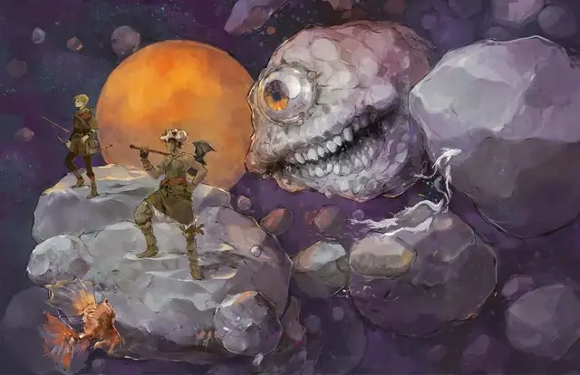

Дурноглаз
Eye Monger
Большая Аберрация, обычно законно-злая

Класс Доспеха 17 (природный доспех)
Хиты 149 (13к10 + 78)
Скорость 0 футов, летая 20 футов (парит)
| мод | спас | ||
|---|---|---|---|
| СИЛ | 21 | +5 | +5 |
| ЛОВ | 6 | −2 | −2 |
| ТЕЛ | 23 | +6 | +6 |
| мод | спас | ||
|---|---|---|---|
| ИНТ | 7 | −2 | −2 |
| МДР | 13 | +1 | +1 |
| ХАР | 7 | −2 | −2 |
Чувства слепое зрение 120 футов (пока глаз дурноглаза закрыт), тёмное зрение 120 футов, пассивное Восприятие 11
Языки Глубинная речь
Опасность 10 (5900 опыта)
Бонус мастерства +4
Особенности
Антимагический пищевод. Магические эффекты, включая те, что производятся заклинаниями и волшебными предметами, но исключая те, что созданы артефактами или божествами, подавляются внутри пищевода дурноглаза. Любая ячейка заклинаний или заряд, потраченный существом в пищеводе на наложение заклинания или активацию волшебного предмета, тратятся без результата. Пока эффект подавляется, он не действует, но время подавления, учитывается в длительности. Никакой заклинание или магический эффект, с источником за пределами пищевода дурноглаза, кроме созданного артефактом или божеством, не может повлиять на существо или предмет внутри.
Обманчивая внешность. Если до начала боя дурноглаз неподвижен, а его глаз и рот закрыты, он совершает бросок инициативы с преимуществом. Кроме того, если существо не видело движений или действий дурноглаза, оно должно преуспеть в проверке Интеллекта (Расследование) Сл 18, чтобы понять, что дурноглаз одушевлен.
Необычная природа. Дурноглаз не нуждается в воздухе.
Действия
Укус. . Рукопашная атака оружием: +9 к попаданию, досягаемость 5 фт., одна цель. Попадание: 12 (2к6 + 5) колющего урона, и если цель — существо Среднего размера или меньше, оно должно преуспеть в спасброске Ловкости Сл 18, иначе будет проглочено дурноглазом, и окажется в его пищеводе (см. «Антимагический пищевод»). Дурноглаз может проглотить только одно существо за раз. Проглоченное существо становится ослеплённым и опутанным, обладает полным укрытием от атак и других эффектов, исходящих снаружи, и получает 35 (10к6) урона кислотой в начале каждого своего хода.
Если дурноглаз получает в течение одного хода 25 или больше урона от находящегося внутри него существа, он изрыгает проглоченное существо, которое падает ничком в пространстве в пределах 10 футов от дурноглаза. Если дурноглаз умирает, то проглоченное существо перестаёт быть опутанным им, и может высвободиться из трупа, используя 10 футов перемещения, и на выходе падает ничком.
Описание
Пока его большой глаз и рот закрыты, дурноглаз выглядит обычным астероидом диаметром 12 футов. Почувствовав вибрации в близлежащем космосе, дурноглаз открывает своё око и демонстрирует зловещую истинную природу.
Дурноглазу и не нужны сокровища, но в его брюхе может храниться изрядное количество случайных ценностей, которые он не в состоянии переварить. Среди них могут быть монеты, металлическое оружие, драгоценные камни и магические предметы, принадлежавшие проглоченным существам.
Несмотря на то, что дурноглаз, в отличие от бехолдера, не создает конус антимагии своим глазом, внутри его пищевода магия не функционирует, что не позволяет проглоченному существу воспользоваться магией для побега.